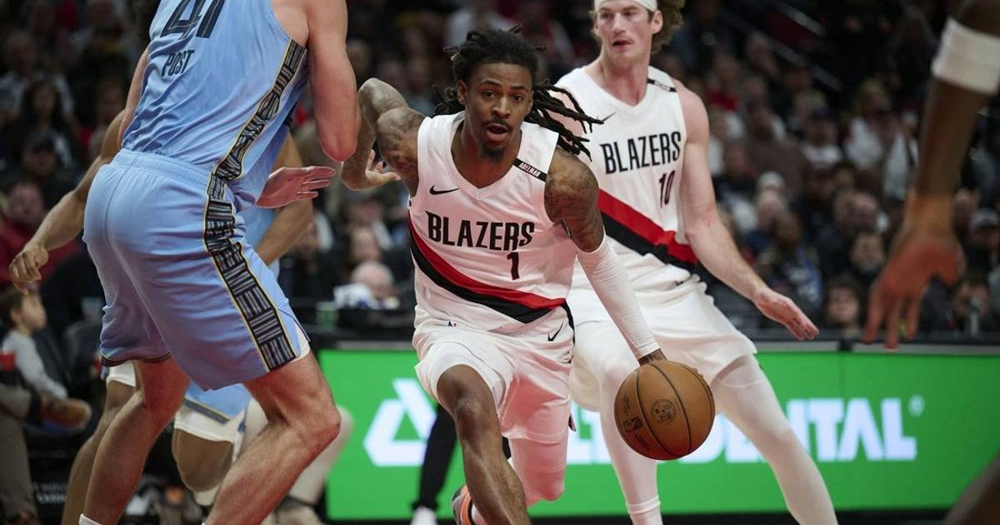

Ja Morant Out at Least Four Weeks With a Hamstring Strain — Against His Former Team
Portland's Ja Morant suffered a Grade 2 left hamstring strain in Thursday's loss to the Memphis Grizzlies — his first game against his former team — and will be re-evaluated in four weeks.

Ja Morant's fresh start in Portland is on hold.
The Trail Blazers guard suffered a Grade 2 left hamstring strain in Thursday's 124-103 loss to the Memphis Grizzlies, the team announced Friday, and will be re-evaluated in four weeks. Morant grabbed at the back of his left leg during a stoppage in play, exited with 7:46 remaining in the fourth quarter, and did not return. An MRI confirmed the strain.
The cruelest timing
The matchup was Morant's first against his former team since the offseason trade that sent him to Portland on June 29 — the Grizzlies received forwards Jerami Grant and Kris Murray in the deal for the two-time All-Star. Morant finished with 14 points and three assists in 23 minutes before the early exit, and had been averaging about 15.8 points and 5.5 assists in four games with the Blazers.
The four-week timeline means Morant will miss at least the next 15 games, per ESPN. Portland (3-1) begins a four-game road trip Saturday at Utah without him, and coach Micah Nori will likely lean more heavily on Jrue Holiday and Scoot Henderson in the backcourt.
A growing injury list
Morant's setback lands in an already brutal opening month for NBA stars. The early-season casualty list already includes Anthony Edwards (knee surgery, out up to two months), Jalen Williams (fractured fibula, out most of the season), Chet Holmgren (patellar tendon tear, out 8-10 weeks), Paolo Banchero (high ankle sprain) and Tyrese Haliburton (hamstring strain).
For Morant, 27, the frustration is compounded by history: he appeared in just 79 games across his final three seasons in Memphis, a total affected by injuries and suspensions. His Portland chapter was supposed to be a reset. Now the reset waits a month.
Gear up: Fanatics